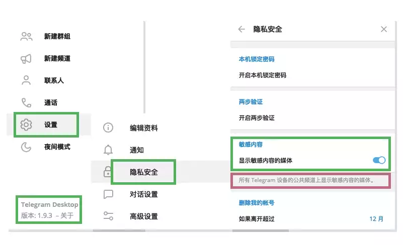

Telegram怎么打开敏感内容？
要在Telegram中打开敏感内容，首先确保你已经设置了适当的隐私和安全设置。如果Telegram屏蔽了某些内容，可以进入“设置”>“隐私与安全”>“内容限制”，然后关闭“限制敏感内容”的选项，允许显示被屏蔽的内容。注意，解除内容限制后，你可能会接触到某些成人或不适宜的内容，因此建议仅在信任的环境中进行此设置。

如何解除Telegram的敏感内容限制
关闭Telegram的敏感内容屏蔽设置
进入隐私与安全设置: 打开Telegram应用，点击左上角的菜单按钮，进入“设置”>“隐私与安全”。在这里，你可以找到“内容限制”选项。
禁用敏感内容过滤: 在“隐私与安全”页面中，找到“内容限制”并关闭“限制敏感内容”的开关。通过这个设置，你将解除Telegram对敏感内容的过滤，开始查看本来被屏蔽的内容，如成人或暴力相关的内容。
确认更改并刷新: 更改完成后，系统会自动更新设置，并解除对敏感内容的过滤。刷新Telegram，你将能够在频道、群组以及私人聊天中看到之前被隐藏的内容。
在Telegram中查看被限制的敏感内容
查看敏感内容: 在禁用内容过滤后，所有的敏感内容（如成人、暴力等类型的内容）将显示在你访问的聊天和群组中。你将能够查看原本被隐藏的消息、图片或视频。
访问被屏蔽的内容: 一旦关闭敏感内容过滤，Telegram中本来隐藏的任何敏感信息都将重新显示。例如，群组中的暴力图像、成人内容或带有敏感标签的消息将恢复正常显示。
注意隐私和安全: 虽然解除限制后，你能够查看所有内容，但一些内容可能会不适合某些用户，特别是在群组中。如果你参与公开频道或群组，查看敏感内容时要特别小心，保护自己的隐私和安全，避免与他人分享不适当的内容。

Telegram中如何开启敏感内容显示
调整Telegram隐私设置以显示敏感内容
进入隐私与安全设置: Telegram下载后，点击左上角的菜单图标，进入“设置”>“隐私与安全”。在设置页面中，你可以找到相关的“内容限制”选项。
关闭敏感内容过滤: 找到“内容限制”选项，并关闭“限制敏感内容”的开关。关闭后，你将能够查看Telegram中被屏蔽的敏感内容，包括成人内容、暴力图像和其他可能被隐藏的消息。
刷新并查看: 完成设置后，系统会自动更新你的设置，并解除对敏感内容的屏蔽。你可以进入任何群组、频道或私人聊天中查看原本被隐藏的内容。
关闭Telegram的内容限制保护功能
关闭内容限制功能: 在“隐私与安全”中找到“内容限制”选项，将其关闭后，所有敏感内容将会恢复显示。此功能默认开启，目的是过滤不适合所有用户的内容。
自定义敏感内容过滤: 在关闭敏感内容保护功能后，你可以根据需要查看暴力、成人等敏感内容。如果你不希望查看此类内容，可以随时重新启用该设置。
恢复正常显示: 关闭敏感内容过滤后，所有Telegram中的消息，包括含有不适宜内容的图像和视频，将显示在你的设备上。务必注意，解除限制可能会让你接触到不适合所有用户的内容。

如何在Telegram中解除对敏感内容的过滤
解除Telegram敏感内容过滤的简单步骤
进入Telegram设置: 打开Telegram应用，点击左上角的菜单图标，选择“设置”>“隐私与安全”。在设置页面中，找到“内容限制”选项。
关闭“限制敏感内容”开关: 在“内容限制”中，关闭“限制敏感内容”的选项。默认情况下，Telegram会对某些敏感内容进行过滤，关闭此设置后，你将能够查看所有内容，无论是成人、暴力还是其他敏感类型的消息。
保存并退出: 更改设置后，Telegram会自动保存设置并解除对敏感内容的过滤。你现在可以在群组、频道以及私人聊天中看到所有类型的内容，包括原本被隐藏的敏感消息。
启用Telegram显示被屏蔽内容的选项
启用内容显示: 在“隐私与安全”设置页面中，找到“内容限制”并将其关闭。这样，你将恢复查看所有Telegram内容，包括敏感内容。所有本来被过滤的内容，如成人图片或暴力图像，将恢复显示。
查看敏感内容: 关闭过滤后，你将能够查看Telegram中被限制的敏感内容。这包括群组和频道中的图像、视频或其他消息，这些内容在没有关闭过滤时会被隐藏或屏蔽。
保持谨慎: 尽管解除敏感内容过滤可以显示所有内容，但请注意，某些内容可能不适合所有用户。解除限制后，你可能会接触到不适宜的或令人不悦的内容，因此建议在需要时谨慎操作。

Telegram中敏感内容显示设置调整
调整Telegram内容过滤选项以解除敏感内容屏蔽
进入隐私与安全设置: 打开Telegram应用，点击左上角的菜单图标，进入“设置”>“隐私与安全”。在这里，你会找到“内容限制”选项。
关闭“限制敏感内容”选项: 在“内容限制”设置中，关闭“限制敏感内容”的开关。Telegram默认会过滤某些被认为是敏感的内容，包括暴力和成人内容。关闭该选项后，你将能够查看Telegram中所有类型的消息，包括这些被屏蔽的敏感内容。
保存设置并刷新: 更改完设置后，Telegram会自动保存并更新设置，你可以直接进入任何群组、频道或聊天，查看本来被屏蔽的内容。需要注意的是，解除内容限制后，所有类型的内容都会显示出来，包括可能不适合所有用户的内容。
在Telegram中开启和关闭敏感内容显示的操作
开启敏感内容显示: 如果你想查看所有内容，可以进入“隐私与安全”设置中的“内容限制”选项，并关闭“限制敏感内容”的功能。这样，所有本来被Telegram过滤的消息和媒体，如成人图片、暴力视频等，将恢复显示。
关闭敏感内容显示: 如果你决定重新启用过滤，可以随时返回“内容限制”设置，打开“限制敏感内容”选项。这样，Telegram会再次屏蔽成人内容、暴力图片等信息，帮助保护未成年人或不适合暴露敏感信息的用户。
注意隐私风险: 解除敏感内容过滤后，你将接触到Telegram中本来隐藏的内容。确保你了解解除限制后可能带来的隐私风险，特别是在公开群组和频道中，某些内容可能不适合所有用户观看。
如何避免Telegram中过多的敏感内容限制
在Telegram中自定义敏感内容显示设置
调整隐私设置: 打开Telegram应用，进入“设置”>“隐私与安全”>“内容限制”。在这里，你可以选择是否启用敏感内容过滤。关闭此功能后，Telegram不会再屏蔽任何类型的敏感内容，让你能够查看所有信息。如果你希望仅解除某些内容的过滤，可以在设置中进行适当调整，选择关闭特定类别的敏感内容限制。
灵活设置过滤选项: 如果你不希望完全解除敏感内容的限制，可以通过自定义设置来选择显示某些类型的内容。例如，可以选择允许查看暴力内容但屏蔽成人图片和视频。根据你的需求，Telegram允许你调整哪些类型的敏感内容需要显示。
使用分组管理: Telegram允许用户创建多种类型的群组和频道，你可以通过加入专门的群组来控制显示的内容。例如，加入专注于特定主题的群组，减少暴力或成人内容的干扰，从而避免不必要的敏感内容。
使用Telegram时如何平衡隐私保护和内容显示
启用隐私保护功能: 在Telegram中，保护个人隐私非常重要，尤其是在显示敏感内容时。进入“设置”>“隐私与安全”，确保你已经设置了隐私保护选项，如谁可以查看你的电话号码、在线状态和个人资料。通过这些设置，你可以控制哪些人可以查看到你的私人信息，避免隐私泄露。
限制谁可以邀请你加入群组: 在“隐私与安全”中，可以设置谁能邀请你加入群组或频道。选择“我的联系人”或“没有人”来限制陌生人将你拉入含有敏感内容的群组。这样可以帮助你避免进入不符合你隐私需求的群体。
使用秘密聊天功能: 若担心敏感内容在普通聊天中被泄露，可以使用Telegram的“秘密聊天”功能。秘密聊天提供端对端加密，确保只有你和对方能够看到聊天内容。启用自毁消息功能后，所有聊天内容会在设定的时间后自动删除，确保更高的隐私保护，同时避免敏感内容泄露。
如何在Telegram中查看被屏蔽的敏感内容？
Telegram为什么会屏蔽某些敏感内容？
解除Telegram敏感内容限制后是否有隐私风险？
Telegram中文 其他新闻
Telegram图片下载器是什么？
Telegram图片下载器是一种工具或软件，用户可以通过它从Telegram聊天应用中下载图片。这些下载器可能 […]
Telegram隐私空间是什么？
Telegram隐私空间是一个Telegram提供的私密存储功能，用户可以在其中存储私人文件和信息。这些内容完 […]

怎么下载telegram？
要下载Telegram，首先打开设备的应用商店。对于Android设备，进入Google Play商店，搜索“ […]

电报是什么软件？
电报（Telegram）是一款跨平台的即时通讯软件，提供文本、语音、视频消息和文件分享等功能。它以高速、安全和 […]